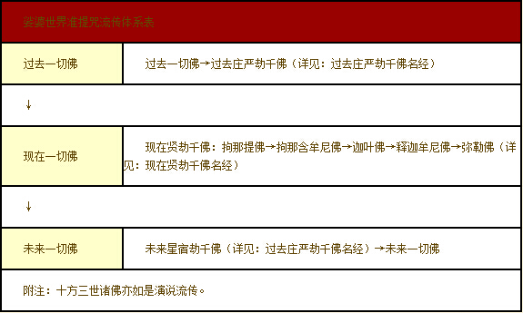

给孤独园位于中印度憍萨罗国舍卫城之南，相当于今尼泊尔南境，近于拉波提河（Rapti）南岸之塞赫特马赫特（Sahet-mahet），为佛陀
精舍之园林之地平正，约有八十顷，内有经行处、讲堂、温室、食堂、厨房、浴舍、病室、莲池、诸房舍。园林中央为香室（梵 gandha-kut!i^，相当于今之佛殿），周围有八十小房。精舍之左右池流清净，树林茂盛，众花异色，蔚然成观。围绕精舍之外，另有十八
准提咒就是在这样

准提咒是经由这样无量无边的诸佛
三世诸佛菩萨皆说利益一切众生的准提咒
在准提经典里也说到：‘此准提大陀罗尼大明咒法。过去一切诸佛已说。未来一切诸佛当说。现在一切诸佛今说。我今亦如是说。为利益一切众生故。令得无上菩提故。（诃罗译）’
‘此尊那大明。乃是一切如来及诸菩萨同所宣说。能与众生作大利益。乃至获得无上正等正觉（法贤译）’
准提咒是由一切如来及诸菩萨同所宣说，并且准提咒的应世也是为了利益一切众生。
佛在这里说到，准提咒是过去一切的佛已经说过，未来世一切诸佛也将会演说，现在住世的一切佛也演说这个咒的功德利益。准提咒是如此广传的
阿弥陀如来曾发愿：‘设我得佛。十方世界无量诸佛。不悉咨嗟称我名者。不取正觉。’此愿力是说祂成佛以后一切诸佛都要依照其愿力宣说其名号，否则祂就不成佛。而阿弥陀佛已经成佛了，所以他的愿力也必然成就了。所以在阿弥陀经里，释迦佛依照阿弥陀佛的愿力，演说阿弥陀佛本愿名号功德。这种情形类似于准提咒的愿力，也是十方三世一切诸佛都宣说称叹的。
而准提咒不只诸佛会演说，一切无量无边的菩萨，也会应机而说准提咒利益众生。
佛说祂现在也如同过去世及未来诸佛演说准提法那样开演准提法，并说其传授准提咒是为了利益一切众生的缘故。此咒是为了利益“一切”众生，并无排除检择。
一切众生的意思如下：
“一切 ：梵语 sarva。乃总赅众物之词。音译作萨婆。大智度论卷二十七（大二五·二六○中）：“萨婆，秦言一切。”翻译名义集卷五（大五四·一一三四下）：“一以普及为言，切以尽际为语。”
一表示普及，切是尽一切空间。表示没有不摄受的地方及对象。

准提咒是可以利益这样广大
诸师关于准提咒之普传开示
◎金刚准提母法门导修＼祈竹仁波切
一般来说，受过此传承法门之灌顶或随许者，可以自观化为本尊身相。没受过此法门之灌顶或随许者，不是不能修这个仪轨，但就不宜自观为本尊，这类的人可以在诵至自化本尊时，改为观想本尊在面前即可以了，诵念内容不变，其他地方也不变。这是
◎
复崔德振
‘（其五）
◎
问：佛母准提陀罗尼经内有印契观，如无上师灌顶，可以如行持否，密咒一项，须法诵几遍始有感应。（某居士）
答：准提咒极为普通，有“显密圆通”一书，记载颇详。不必有师，即可修法，兹检一册敬赠，恐贵处或无
◎ 灌顶之研究＼王弘愿阿阇黎
东密王弘愿阿阇黎说过：‘况灌顶受法，惟两部为严，若显密杂部，如释迦如来所传密咒，更未尝以为沾沾矣！ 法华般若，暨一切显教之经，大抵皆说咒加持，而未尝有灌顶师受之嘱。即大悲、准提、陀罗尼集经等，纯说密咒者亦然！’
结语
准提咒早已遍传此世界，
准提咒几乎跨越了唐密、东密、藏密、
《
准提法门在汉地流传至今已近千余年，从早期的唐朝密宗正式引进，到后来因为密教式微，到辽代变为华严宗所倡导的密法，如显密圆通成佛心要集的出世，转为中国式的密法。而本土化的转变正显示了此法门于斯土的融入深化。不再成为外来的佛菩萨，一如阿弥陀佛与观世音菩萨似乎成为内化为中国的文化。我们可以从一般农民历、禅门日诵中皆有记载准提菩萨的圣诞即可知其于汉地的深入与因缘。
准提神咒在禅门日诵中列为每日必持的
准提佛母更是与中土最有缘的大菩萨，以前之中国，哪里有土地公庙，哪里就有准提庵，供奉准提观音的寺院遍及各地。
所以准提咒不是属于哪一宗派所专有的，而是属于一切诸佛菩萨所加持的智慧结晶。是属于全人类、甚至是全宇宙法界所共有的无上如意宝珠。
故可知准提咒是释迦佛为了悯念尽未来际薄福恶业一切众生所说的殊胜陀罗尼。